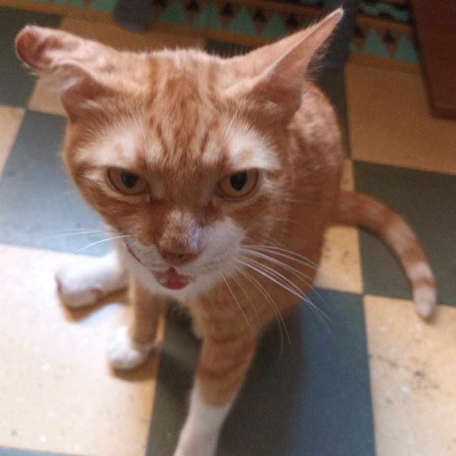
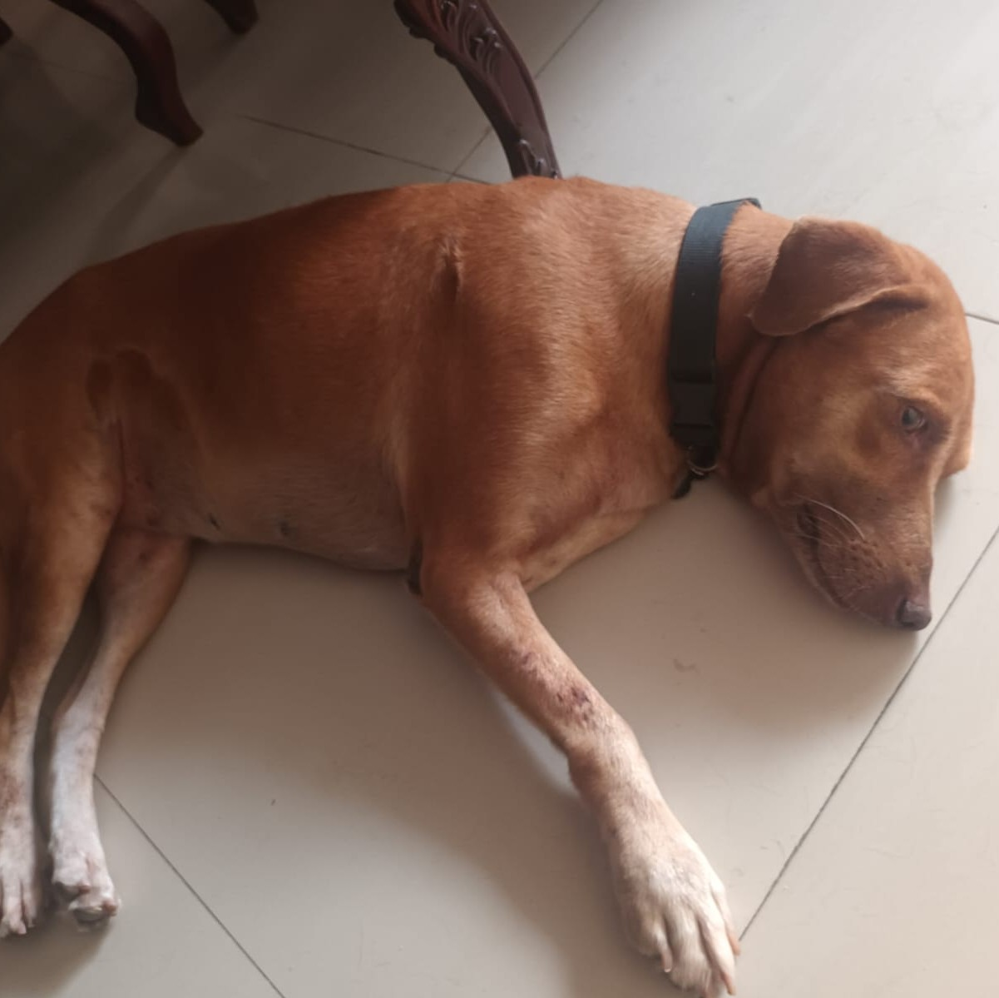
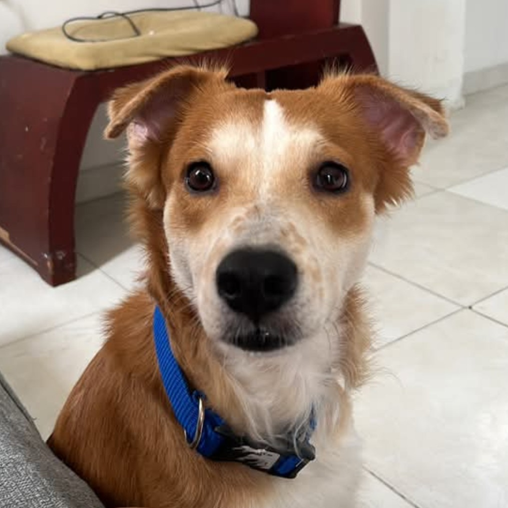
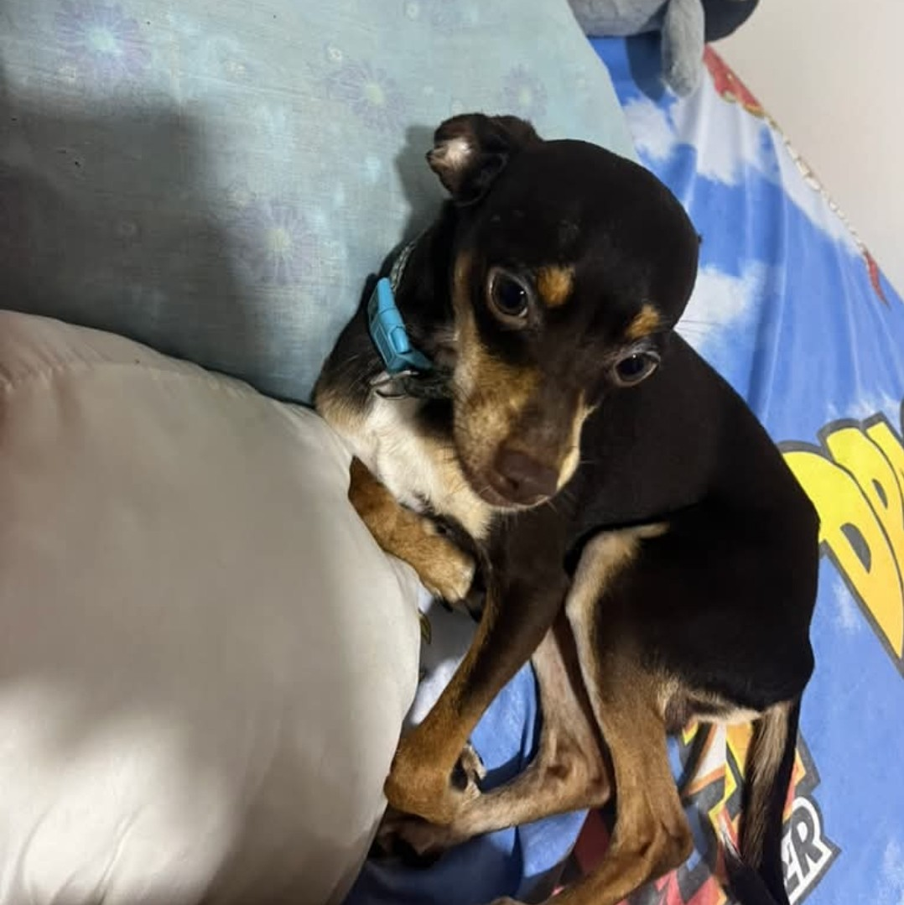

Fritanga: Fat, Orange and an idiot
Dakota: Hyperactive, Black & brown and playful
Chacarron: Sleepy head, chonky and very angry (He's a menace)

Laika: Lazy, fatty and loud

Bailey: Stubborn, loud and chill

Mailo: R.I.P 🙏, the goat itself and a good boy